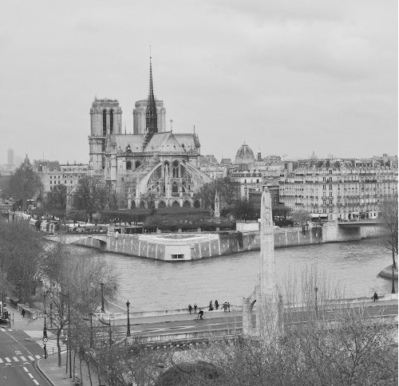

Đã bao giờ bạn để ý đến tiếng chuông chiều của Nhà thờ lớn Hà Nội, của một ngôi chùa cổ kính ở một làng nhỏ, hay ở bất cứ đình chùa, nhà thờ nào trên khắp thế giới? Bạn có lắng nghe và đón nó vào lòng như một tiếng nguyện cầu cho sự thanh bình và thanh thản? Thanh bình ở cảnh vật, cuộc sống và thanh thản trong lòng. Tôi thì luôn cảm nhận như thế. Cứ mỗi khi lòng mình nhộn nhạo những lo lắng, tức tưởi những giận hờn, trĩu nặng những áp lực, cứ sau những ngày tháng kiệt quệ chạy vạy, những đêm căng thẳng tính toán hay vật vã khó ngủ, bao giờ tôi cũng tìm đến, trong vô thức, một góc sân chùa hay đứng trước nhà thờ, đứng rất lâu, chỉ để nghe vọng ra một tiếng chuông, nghe thì thầm trong lòng một lời cầu nguyện là thấy lòng mình thanh thản lại, thấy cuộc sống này thanh bình, đáng yêu biết bao. Những lúc ấy tôi như được nạp đầy sinh lực để trở lại trong cuộc chiến đấu sinh tồn không bao giờ dừng lại của loài người.
Nước nào cũng vậy, đạo nào cũng thế, những giá trị cuối cùng mà loài người hướng tới, mọi người kỳ vọng cuối cùng lại là những thứ đơn giản nhất: yên bình và an lành, không có biên giới, không có sự khác biệt nào. Sao cứ nháo nhác lên mà đấu đá, tranh giành, chém giết, hờn ghen đố kỵ. Chỉ nói yêu thương nhau thôi có được không? Chỉ ôm nhau thôi có được không?

Nhà thớ Đức Bà Paris toàn cảnh. (Ảnh: Tác giả)
Tôi đã nghĩ như thế khi đến trước Nhà thờ Đức Bà (Notre Dame de Paris) ở Paris, bởi dù to lớn, tinh xảo hơn rất nhiều lần nhà thờ ở Hà Nội, khác biệt hoàn toàn so với khung cảnh những đình chùa ở Việt Nam, nhưng cảm giác khi đứng trước nó, nghe tiếng chuông chiều vẫn thế, vẫn vọng lên tiếng nguyện cầu bình an muôn thuở. Tôi vẫn còn nguyên niềm khao khát như mọi khi: đứng giữa sân hay quảng trường rộng lớn, dang rộng vòng tay để sẵn sàng ôm lấy bất cứ người nào ngang qua. Không, tôi không dang tay, tôi chưa đủ dũng cảm và tự nhiên, tôi chỉ dang rộng tấm lòng mình, sẵn sàng chào hỏi, vui cười, trò chuyện và giúp đỡ bất kỳ ai.
Nhắc đến Paris, không thể không nhắc đến Nhà thờ Đức Bà. Bởi nó là một trong những biểu tượng của Paris, là điểm du lịch thu hút nhiều khách tham quan nhất của nước Pháp (và cả thế giới).
Nhà thờ Đức Bà không phải là nhà thờ đặc sắc nhất, không to nhất hay cao nhất nước Pháp nhưng lại quá nổi tiếng vì kiến trúc đẹp, vì những bức tượng phong phú trên khắp các mặt của nhà thờ, vì sự pha trộn của các trường phái kiến trúc (do quá trình xây dựng nhà thờ kéo dài gần hai thế kỷ). Nhà thờ Đức Bà càng nổi bật hơn vì phong cảnh thơ mộng xung quanh, nơi dòng sông Seine tách ra thành hai nhánh, rồi lại hợp lại ngay để vùng đất quanh nhà thờ biến thành một hòn đảo nhỏ xinh đẹp.
Nhà thờ cổ kính ấy cũng nổi tiếng vì gắn liền với tác phẩm văn học cùng tên của Victor Hugo, câu chuyện lãng mạn mà đau thương của chàng gù Quasimodo với nàng Esmeralda xinh đẹp. Câu chuyện đã đi vào lịch sử văn học thế giới và là cảm hứng cho những bộ phim, ca khúc, những vở nhạc kịch…, đã từng làm rung động trái tim và lấy đi nước mắt của bao thế hệ người đọc.
Có một điều không phải ai cũng biết, có vẻ không liên quan gì đến nhà thờ nhưng lại là một trong những lý do khiến cho nhiều khách du lịch muốn đến thăm Nhà thờ Đức Bà. Đó chính là “Mốc số 0”, điểm khởi đầu của tất cả các con đường của nước Pháp nối liền với thủ đô. Ngay trước mặt Nhà thờ Đức Bà, trên khuôn viên của giáo đường, cách cổng chính chừng 50 mét là một tấm bảng đồng nhỏ khiêm tốn được gắn trên mặt đất với dòng chữ “Điểm số 0 của các con đường nước Pháp”.
Chỉ đơn giản là điểm mốc để tính khoảng cách từ Paris đến các thành phố khác và để đặt cột cây số trên các con đường bắt đầu từ Paris tỏa ra toàn nước Pháp. Có điều gì hấp dẫn kéo khách du lịch đến đây? Chắc chắn không phải họ kéo nhau tới để chiêm ngưỡng một tấm bảng đồng nhỏ gắn trên mặt đất. Có lẽ chính là do một tin đồn, một lời nguyền nào đó không được kiểm chứng cho rằng: ai đã từng đến đây, nếu đặt lên bảng đồng này một đồng tiền (hoặc không cần) rồi đặt một chân (hay cả hai chân) lên điểm này, người đó sẽ có cơ hội để trở lại nước Pháp, trở lại Paris ít nhất là một lần, bất kể điều kiện địa lý, kinh tế hay sức khỏe của người đó ra sao. Mười khách du lịch đến Paris thì có đến chín người rưỡi mong một lần trở lại, và “Mốc số 0” lại liền sát với một công trình nghệ thuật quá nổi tiếng, thế nên bất kỳ ai biết điều này cũng đều cố gắng đến, cố gắng đặt chân lên đây, đến nỗi tấm bảng đồng ngày càng mòn vẹt đi.
Có nên tin vào hai chữ “số phận”?
Tôi không biết độ chính xác và sức mạnh của lời nguyền kia đến mức nào. Không biết trong số hàng trăm triệu người đặt chân lên tấm bảng đồng ấy, có bao nhiêu người đã có dịp trở lại Paris, đặc biệt là những người có thể trở lại bất chấp hoàn cảnh của mình. Tôi cũng không biết những người đã, đang và sẽ đặt chân lên đó, trong thâm tâm họ muốn làm điều ấy giống như là một phần tất yếu trong “số phận” của họ, hay muốn thay đổi chính số phận ấy? Nhưng tôi muốn mượn câu chuyện “Mốc số 0” để nói về quan điểm của tôi về thứ mà mọi người gọi là “duyên phận” và nhất là “duyên phận” của tôi với nước Pháp và Paris.
Tôi vốn là người không tin vào số phận. Tôi sống ngang tàng và tự tin. Tôi tự tin vào niềm tin và khả năng của mình, vào người thân và bạn bè. Tôi chưa bao giờ mê tín, không muốn nghĩ rằng mình sinh ra đã có một số phận nào đó được đặt ra từ trước, rằng mình có cố gắng thế nào, có tự thay đổi ra sao cũng không thể đi ra khỏi được con đường “số phận” đã vẽ ra ấy. Mặc dù càng sống, càng từng trải, càng chứng kiến hay biết đến những câu chuyện mà nhiều khi khoa học cũng không giải thích được, ta càng tự hỏi mình “có số phận thật hay không?” Tôi vẫn không muốn tin vào hai chữ số phận. Hay nói đúng hơn, với tôi, nếu đúng như mỗi người thực sự có một “số phận” nào đó được đặt trước, hãy đừng nghĩ đến, đừng tin vào điều đó một cách mù quáng mà biến nó thành cái đích hay động lực cho cuộc sống của mình ngày càng tốt hơn.
Nghĩa là nếu như thầy bói phán rằng “số phận” của ta là cái gì đó tích cực: ta sẽ giàu có, sẽ an nhàn… thì đừng ngồi đó khoanh tay chờ đợi cái giàu tự đến, ngược lại, ngay trong thời điểm cùng cực của nghèo khó vất vả, hãy có niềm tin vào cái đích “số phận”ấy, lấy nó để động viên mình, để mà gượng dậy, mà xoay xở để nó thực sự trở thành hiện thực. Còn nếu bị phán là số nghèo khổ, vất vả, đừng ngồi than trời và từ bỏ những ước mơ, hãy lấy “số phận” của mình làm động lực để lao động, hãy đầu tư làm giàu để nếu như ta không thành công cũng không có gì phải hối tiếc. Còn nếu thành công, ta càng tự hào đã vượt qua được số phận của chính mình. Đó là cách suy nghĩ của tôi.
Ngay từ khi đặt chân đến Paris và nghe câu chuyện về “lời nguyền Mốc số 0” trước Nhà thờ Đức Bà, tôi đã không để ý đến và không bao giờ có ý định đặt chân lên tấm bảng đồng ấy. Có thể khởi điểm ban đầu vì tôi không có ý định ở lại Paris mà nghĩ mình sẽ quay về sau hai năm học cao học. Có thể vì Paris đối với tôi không có gì hấp dẫn đến mức phải tìm cách ở lại, hay quay lại bằng mọi giá. Cũng có thể vì bản tính thích thách thức số phận của tôi hay vì suy nghĩ “nếu như ta có ‘số’ ở lại Paris, ta sẽ ở mà chẳng cần đặt chân lên đó”. Và thực tế là ngày hôm nay, sau 16 năm sống ở Pháp, tôi vẫn chưa bao giờ đặt chân mình lên đó dù đã hàng trăm lần đứng đó ngắm nhà thờ hay rất nhiều lần dẫn bạn bè, người thân đến giới thiệu và kể về câu chuyện “Mốc số 0” để họ, nếu thích, có thể đặt chân lên tấm bảng huyền bí kia.
Người ta có số phận, có duyên tiền kiếp không? Điều đó tùy vào suy nghĩ của bạn. Bây giờ tôi sẽ kể vì sao và làm thế nào tôi lại đến Paris và ở lại nơi đây, rồi bạn sẽ phán xét giúp tôi rằng tôi có duyên phận với thành phố này hay không.
Từ khi tôi còn rất bé, mẹ tôi đã bảo: “Thầy bói phán cả hai đứa nhà này (tôi và chị gái) đều có số xuất ngoại, thậm chí định cư ở nước ngoài”. Chúng tôi chỉ cười. Gia đình tôi kinh tế luôn chỉ ở diện trung bình kém, vất vả mới đủ ăn. Nghĩ gì đi Tây.
Từ một kỳ thi đại học thất bại… và sự tìm lại chính mình
Kỳ thi đại học của tôi có thể nói là không thành công. Có nhiều lý do. Lý do thứ nhất là ba năm học cấp ba của tôi đã thực sự trở thành “thảm họa” với gia đình: từ một học sinh tốt nghiệp với điểm số cao nhất trường cấp hai và thi vào cấp ba với thành tích xuất sắc, sau ba năm trung học “nổi loạn” với đủ thứ nhức nhối “mới mẻ”: yêu đương, uống rượu, hút thuốc, tụ tập với những “thành phần” phức tạp, tôi trở thành một học sinh cá biệt, thậm chí được đánh giá là không đủ khả năng thi đỗ kỳ thi tốt nghiệp cấp ba, chứ đừng nói là thi đại học, mặc dù tôi vẫn tin vào khả năng của mình và bạn bè, người thân đều đánh giá tôi là người thông minh nhanh nhẹn. Lý do thứ hai là tôi ôm đồm quá nhiều thứ. Từ nhỏ tôi đã chứng tỏ được khả năng của mình trong nhiều lĩnh vực: khoa học tự nhiên, văn thơ, thể thao, ca hát, hội họa. Có thể nói tôi là một “tài năng” nửa vời trong đủ loại “cầm kỳ thi họa”. Từ cấp một đến cấp hai, trước mỗi kỳ thi học sinh giỏi quận, thành phố, các giáo viên bộ môn luôn phải đấu tranh để giành lấy tôi làm đại diện cho bộ môn của mình: nào tiếng Anh, nào Văn, nào Toán, hay cả Vật lý, và môn nào đi thi tôi cũng từng đạt giải cấp Quận, cấp thành phố. Ba mẹ tôi là kiến trúc sư, từ nhỏ tôi cũng bộc lộ năng khiếu hội họa nên ba mẹ muốn tôi nối nghiệp, còn tôi ngoài mơ ước trở thành kiến trúc sư lại thích làm phóng viên, nhà văn. Vì thế khi thi đại học, trong khi các bạn bè tôi chỉ tập trung cho một khối duy nhất, tôi luyện thi cho ba khối, hay đúng hơn là hai khối cộng thêm môn vẽ: tự nhiên, xã hội và cả kiến trúc nữa. Gọi là luyện thi cho oai, kỳ thực tôi không mấy khi đến lớp, tối ngày trốn học và say xỉn.
Cuối cùng tôi cũng đỗ đại học, đỗ ba trường hẳn hoi nhưng mục đích chính thì đều trượt: tôi không đỗ Kiến trúc mà đỗ Mỹ thuật Công nghiệp, không đủ điểm vào Khoa Báo chí trường Đại học Khoa học Xã hội & Nhân văn Hà Nội mà chỉ đủ điểm vào một số khoa khác trong trường, và Đại học dân lập Thăng Long (tôi đi thi vì nghe bạn của chị nói là rất tốt, còn thời đó, vào đại học dân lập giống như sự thừa nhận một kỳ thi đại học thất bại).
Tôi đã cắp bị cói đi học Đại học Mỹ thuật Công nghiệp được một tuần, nhưng đó cũng là thời điểm tôi đột nhiên nhận ra nỗi thất vọng về bản thân sau ba năm trung học. Có lẽ khoảnh khắc đứng trước tấm bảng đăng kết quả tốt nghiệp cấp ba hay kết quả thi Đại học Kiến trúc đã giống như những cái tát trời giáng vào mặt tôi: chưa bao giờ tôi thấy nhục nhã và hổ thẹn đến thế, tôi sẽ nhớ mãi những giọt nước mắt mà tôi không thể khóc ra được khi xung quanh mình bạn bè ôm nhau hồ hởi hay hét lên vì sung sướng. Bởi vậy khi bước chân vào Đại học Mỹ thuật Công nghiệp, tôi thấy rùng mình: xung quanh tôi nhan nhản những mái tóc kỳ quái, những cái đầu đeo tai nghe nhạc rock giật giật, những cái quần bò rách và bị cói. Đã từng đi học vẽ cùng nhau nhiều nên tôi biết: bọn họ không hư nhưng thích sống khác người (tôi đã từng như thế), đầu óc lãng mạn và “nổi loạn” (cũng từng luôn). Còn tôi bỗng muốn mình dừng lại, muốn tách ra khỏi môi trường ấy một thời gian, để sống bình thường và giản dị hơn. Vậy là tôi dừng lại. Tôi quyết tâm học Dân lập Thăng Long mặc dù chẳng có nhiều thông tin về ngôi trường này.
Bởi thế khi vào trường, tôi không hề biết rằng trường áp dụng giáo trình và cách dạy học của hệ thống trường tư thục của Pháp, rằng rất nhiều bạn bè tôi vào trường với ước mong một ngày sẽ giành được một suất học bổng đi Pháp. Tôi chỉ bị cuốn hút trước phương thức đào tạo hết sức nghiêm túc với giáo trình rất nặng, nhưng đặc biệt phát triển kỹ năng sống và tạo điều kiện cho hoạt động ngoại khóa của sinh viên. Như cá gặp nước, tôi trở về với những khả năng của mình: vừa luôn đạt kết quả học tập xuất sắc, vừa trực tiếp gây dựng và tham gia các hoạt động ngoại khóa: bóng đá, bóng bàn, âm nhạc, thi SV96… Nhưng mỗi năm một lần, trường tổ chức buổi họp mặt, phổ biến thông tin về chương trình đào tạo kết hợp với trường ở Pháp thì tôi dửng dưng, chưa một lần tham dự. Tôi có một tình yêu đặc biệt với Hà Nội và chưa bao giờ muốn rời xa nó. Vả lại, sau tất cả những gì đã gây ra cho ba mẹ trong ba năm trung học, tôi muốn bù đắp cho họ, không muốn xa ba mẹ tôi.
Hai năm học cuối cùng là lúc tôi bắt đầu đi làm cho một công ty nước ngoài rồi loay hoay một dự án mở công ty riêng, cộng thêm những hoạt động ngoại khóa quá tải, điểm học của tôi bắt đầu chững lại. Khi tôi kịp nhận ra thì có vẻ như đã hơi muộn: Tôi cần bảo vệ luận văn với điểm số tuyệt đối mới có thể nâng điểm tổng kết cho đủ tấm bằng loại giỏi, mà điều ấy hoàn toàn không dễ. Bởi ở trường tôi, không giống như các trường công lập, điểm bảo vệ luận văn không phải là một món quà mà nhà trường ban cho sinh viên như một kỷ niệm đẹp trước khi ra trường. Hội đồng chấm điểm luận văn tốt nghiệp của trường Thăng Long cũng khắt khe như bất cứ một kỳ thi nào trước đó và ở trường tôi, người ta không thích cho điểm tối đa. Bởi thế tôi có phần buông xuôi. Những sinh viên chưa ra trường thì lo có tấm bằng đẹp để đi xin việc, còn tôi từ năm thứ hai đã đi làm cho công ty nước ngoài, giữa năm thứ tư đã mở công ty riêng nên tôi không quan tâm lắm đến tấm bằng này. Tôi luôn đánh giá cao khả năng của mình hơn là những tấm bằng tôi có. Bạn bè trong lớp tôi cũng muốn có bằng giỏi để được vào diện lựa chọn cho cuộc thi giành học bổng xuất sắc đi Pháp (chỉ có hai suất cho cả khóa), nhưng khi ấy tôi càng không quan tâm: gia đình tôi nếu trước đó đã không giàu có thì thời điểm đó càng không có lấy một đồng. Mẹ tôi cho một người anh họ của tôi vay toàn bộ số tiền trước đó ba mẹ dành dụm được, nhưng không may người này đầu tư làm ăn rồi phá sản. Khi nghe tin ấy, những chủ nợ khác, thậm chí là người trong nhà đều chạy lại giành nhau thu lấy đồ đạc giá trị trong nhà anh ta, còn mẹ tôi mỗi lần chạy tới lại cho con anh ấy tiền ăn, học, thậm chí thấy gia đình anh bị đòi tiền ráo riết quá thì lấy thêm tiền của mình ra mà trả nợ giùm, và gia đình tôi cũng khánh kiệt. Khi ấy tôi chỉ có duy nhất một suy nghĩ là tập trung kiếm tiền thật nhanh để giúp đỡ gia đình. Tôi đã định bỏ mặc luận văn tốt nghiệp. Nhưng một người con gái đã làm tôi thay đổi suy nghĩ ấy.
Một luận văn tốt nghiệp đầy gian khó…và suất học bổng không mong đợi
Trong khi bạn bè cùng lớp đã tìm được giáo viên hướng dẫn và bắt tay vào viết luận văn được hơn hai tháng, chỉ còn ba tuần nữa là đến kỳ bảo vệ, tôi vẫn chỉ chạy ngược xuôi cho ngày ra mắt công ty riêng. Chỉ khi tình cờ nói chuyện với cô bạn thân, cô ấy mới giận dữ bảo tôi sao chỉ còn một kỳ luận văn cuối cùng mà buông xuôi kết quả học tập xuất sắc của bốn năm đại học. Không phải cơn giận dữ ấy, mà chính ánh mắt thất vọng của bạn khi tôi bảo “mặc kệ” lại làm tôi suy nghĩ. Tôi đã từng làm thất vọng những người thân của mình một lần và tự hứa sẽ không để điều đó lặp lại.
Vậy là tôi đi tìm một giáo viên hướng dẫn luận văn (điều bắt buộc nếu tôi muốn bảo vệ khóa luận). Tôi không có nhiều lựa chọn, ai cũng lắc đầu. Chỉ có một cô giáo nhận lời nói chuyện với tôi, nhưng câu trả lời của cô khiến tôi lâm vào bế tắc: Cô giáo biết khả năng của tôi nhưng nói rằng đã quá muộn. Thời gian còn lại không đủ. Cả buổi tối, tôi ngồi thuyết phục cô nhưng cô cũng không chịu, nhất là khi cô biết tôi còn chưa viết được dòng nào, thậm chí cả đề tài cũng còn chưa có. Tôi trở về nhà, ngồi trước máy tính và suy nghĩ, rồi tôi viết, viết điên cuồng, thậm chí tay vừa gõ bàn phím, mồm nhai miếng mì tôm khô, mắt vừa đọc tài liệu để lấy thêm ý tưởng. Và trong một đêm trắng tôi viết 50 trang giấy. Tám giờ sáng hôm sau tôi bấm chuông nhà cô với đôi mắt thâm quầng và tập bản thảo vừa in vội trên tay. Cô ngạc nhiên, ban đầu nghĩ tôi sao chép trên mạng, nhưng sau một hồi đọc những gì tôi viết, cô bảo “Cậu là một thằng điên, hoặc là một thiên tài hay cái gì gần như thế. Tôi nhận làm giáo viên hướng dẫn của cậu. Tôi nghĩ có thể tự hào vì cậu, cũng có thể mọi người sẽ bảo tôi điên. Điều đó tùy vào sự cố gắng của cậu.”
Tất nhiên là tôi không để cô phải thất vọng. Điểm luận văn và bảo vệ của tôi không tuyệt đối, nhưng đạt điểm 9,8/10 với lời khen ngợi đặc biệt của hội đồng có tiếng là khắt khe, vừa đủ để tôi đạt tấm bằng tốt nghiệp loại giỏi.
Sau kỳ bảo vệ ấy, tôi lại lao vào công việc của công ty riêng mới mở. Khi nghe nói có buổi phổ biến về việc lựa chọn sinh viên cho kỳ thi chọn hai suất học bổng đi Pháp, tôi cười khẩy và bỏ qua. Hai hôm sau tôi nhận thông báo được chọn vào một trong bốn sinh viên dự kỳ thi cuối cùng này. Tôi cũng cười khẩy. Trong số bốn người có tôi và hai người bạn thân của tôi. Người đầu tiên giống như tôi, gia cảnh khó khăn và cũng không bao giờ nghĩ đến chuyện đi Pháp, ngay sau khi biết tin, đã tuyên bố bỏ thi. Người thứ hai, có thể gọi là “anh em kết nghĩa” với tôi cũng được: thân thiết từ hồi cấp ba, luôn sát cánh và cũng là “đối thủ” đáng gờm của tôi trong mọi lĩnh vực: học hành, hoạt động ngoại khóa. Bạn tôi lúc nào cũng nung nấu ý định sang Pháp du học, ngay từ những năm đầu tiên vào trường. Tôi, bởi thế cũng muốn tuyên bố bỏ thi vì nghĩ rằng làm như vậy, cậu bạn thân sẽ nghiễm nhiên được đi, trong khi gia đình tôi không có điều kiện, dù chỉ là bỏ tiền ra mua vé máy bay.
Lại là người con gái ấy và mẹ tôi làm tôi đổi ý. Cả hai đều thuyết phục tôi rằng, chuyện có khả năng đi hay không thì chưa biết, nhưng bỏ thi lúc này là hèn nhát, là tôi hồ nghi về khả năng của mình. Sẽ không ai nghĩ tôi bỏ thi vì muốn bạn tôi không phải chịu áp lực mà chính vì tôi sợ. Cứ thi đi rồi nếu được, nhường lại suất của mình mới là đàn ông quân tử.
Tôi thì chưa bao giờ hoài nghi về khả năng của mình, cũng chưa bao giờ muốn mọi người nghĩ mình là một kẻ hèn.
Tôi đồng ý đăng ký dự thi. Nhưng không chuẩn bị gì cả. Đêm trước hôm thi tôi đi nhậu với lớp cấp hai cũ, ai cũng bảo uống ít thôi để mai còn thi, tôi chỉ cười. Uống say đến nỗi về đến nhà phải bò lên cầu thang.
Tôi ra khỏi phòng thi mà lòng không vướng bận. Cũng có thể tâm lý thoải mái “không có gì để mất” đã khiến tôi làm tốt và phỏng vấn rất trôi chảy. Hai hôm sau trường gọi chúng tôi đến, người phụ trách sinh viên thông báo kết quả cuộc thi và đưa cho tôi một tờ giấy: giấy gọi nhập học với học bổng toàn phần của hiệu trưởng trường ở Pháp, người đã về Việt Nam phỏng vấn và thi tuyển chúng tôi. Còn người bạn tôi, buồn thay, không được chọn. Người cũng trúng tuyển cùng với tôi lại là người tuy học cùng lớp nhưng dường như ở một thế giới khác, không mấy khi giao tiếp, chơi bời với chúng tôi. Cuộc đời luôn trớ trêu như thế.
Tôi nhìn ánh mắt thất vọng của cậu bạn thân, tôi với nó đã từng có những cuộc “đối đầu” thầm lặng như thế trong các kỳ thi, nhiều lần tôi thắng, nhiều lần nó thắng, và cả hai luôn lấy đó làm động lực cho các kỳ thi tiếp theo, nhưng kỳ thi lần này chỉ có một. Tôi bảo nó đừng vội buồn, rồi tôi chạy ra gọi điện về cho mẹ và chị gái: hai người đang ở nhà đợi nghe kết quả kỳ thi của tôi. Tôi nói với mẹ: “Con được chọn rồi, nhưng con sẽ không đi đâu. Con không muốn ba mẹ thêm khó khăn vào lúc này”. Mẹ nói giọng nghèn nghẹn “Mẹ hiểu con, nhưng mẹ muốn con nghĩ lại năm phút. Nếu con muốn đi, ba mẹ bằng mọi cách sẽ lo được. Đấy là ước mơ của cả ngàn người, không thể quyết định mà không suy nghĩ như thế”. Tôi buông máy, ngồi im năm phút suy nghĩ, rồi gọi lại “Con nghĩ rồi, con sẽ không đi. Mẹ sẽ thấy không cần đi học nước ngoài con mẹ cũng sẽ thành công. Con sẽ nhường lại suất đi này”. Tôi cúp máy nhưng còn kịp nghe tiếng khóc nghẹn của mẹ và chị tôi, tiếng khóc của tất thảy những yêu thương, cảm phục, hãnh diện, tự hào, xen lẫn nỗi xót xa, đau đớn, tiếc nuối. Tất cả ngần ấy thứ và hơn thế nữa, tiếng khóc mà cả đời tôi không thể nào quên.
Tôi quay sang cậu bạn: Mày nghe tao nói rồi nhé, tao không đi, không có gì hối tiếc cả.
Nhưng mọi sự không đơn giản như thế. Ban giám hiệu sôi sục lên khi nghe tuyên bố của tôi. Họ nghĩ tôi đang đùa. Thầy hiệu trưởng mắng tôi té tát, nói rằng cả nghìn sinh viên trường này mong được như tôi. Rằng tôi không coi trọng vận may của mình và không coi trọng cả kỳ thi tuyển, nếu không muốn đi lẽ ra không nên đi thi. (Vâng, nhưng ai chịu hiểu cho những khó xử trong lòng tôi) Điều quan trọng là giấy mời đã đề tên tôi, và chỉ có một người có thể ký giấy mời này. Đó là ông hiệu trưởng người Pháp, đang chuẩn bị ra sân bay. Không nói một lời, tôi nắm tay cậu bạn, kéo nó lao xuống lấy xe máy phóng như điên đến khách sạn. Không kịp, ông ấy đã lên máy bay. Tôi quay về trường và biết thêm thông tin: nếu tôi không đi thì suất này cũng coi như bỏ, không thể thay thế. Bạn tôi có lẽ mặc cảm vì cái danh phận phải nhận lại suất nhường, cũng tuyên bố không đi nữa dù nếu có được. Mặc những lời mắng mỏ của ban giám hiệu, trách tôi làm mất đi một suất học cho một người có thể làm rạng danh nhà trường, tôi vẫn đi về với quyết định: sẽ bỏ suất.
Tôi lại đến nhà cô bạn như mọi ngày, nhân tiện thông báo với cô ấy kết quả cuộc thi, và tất nhiên cả quyết định của mình. Trong lòng tôi khi ấy thanh thản, không hối tiếc, không oán trách. Tôi bảo “không bao giờ tin vào số phận nhưng chắc là số mình không đi Tây được”, rồi cười. Lại một lần nữa cô ấy thuyết phục tôi, cô nói “biết bao nhiêu người mong được như cậu, bao nhiêu người xót xa khi nghĩ cậu phải bỏ cơ hội như thế, còn cậu thì cười”. Rồi bố mẹ cô cũng cố gắng thuyết phục. Tôi vẫn còn nhớ (và biết ơn) lời của bố mẹ cô: “Hãy đi đi, nếu muốn thì đi hai năm rồi về để không bao giờ phải hối tiếc. Cần bao nhiêu tiền bác sẽ cho cháu vay, mười năm, hai mươi năm, lúc nào có thì trả lại bác. Bác tin ở cháu”. Điều khiến tôi cảm động không phải vì bố mẹ cô ấy hứa cho tôi vay tiền (chẳng bao giờ tôi nghĩ đến chuyện vay tiền của bố mẹ bạn gái), mà ở sự quan tâm và niềm tin mà họ dành cho tôi.
Quyết định ra đi
Không chỉ có họ, tất cả gia đình tôi, bạn bè của ba mẹ tôi đều thuyết phục tôi. Bạn bè của ba mẹ tôi còn lập ra một quỹ quyên góp tiền cho tôi vay “không lãi, không thời hạn”. Và cuối cùng tôi suy nghĩ lại, tôi bỗng nghĩ rằng việc tôi không đi không phải là một hành động anh hùng trả ơn cho ba mẹ, mà có thể là một gánh nặng tâm lý cho suốt phần đời còn lại của họ: họ sẽ luôn phải hối tiếc, phải xót xa và thấy có lỗi trong quyết định của tôi. Nếu như tôi ở lại mà thành công thì còn đỡ, nếu tôi phải vất vả khổ sở, có lẽ mẹ tôi sẽ hối hận mãi vì đã cho người ta vay hết tiền mà rồi không bao giờ nhận lại được. Rồi tôi tự nói với mình “Chỉ hai năm thôi, rồi ta sẽ quay lại và mọi thứ lại như cũ”. Sau khi quyết định, tôi bán chiếc xe máy mới mua bằng tiền học bổng và tiền dành dụm khi đi làm để lấy tiền mua vé máy bay. Bạn bè ba mẹ tôi quyên góp cho vay một chút để mua đồ đạc, máy tính cũ và chút tiền dắt lưng. Và thế là tôi đặt chân đến Paris với tám mươi cân hành lý, 500 đô-la, hai bàn tay và một niềm tin để bắt đầu một cuộc hành trình, một cuộc chinh phục mà tôi không được phép thất bại để khỏi phụ niềm tin của biết bao người, của một người. Cũng có thể vì tâm niệm “không được thất bại” ấy mà tôi đã chiến đấu trên mảnh đất quê người bằng tất cả sức lực và ý chí, cố gắng ở lại cho đến lúc làm được điều gì đó, đến lúc mất một người con gái và gặp một người con gái. Rồi tôi ở lại Paris với những nỗi niềm, với một cái nợ quê hương không bao giờ trả hết.